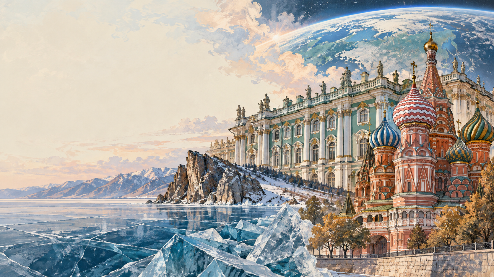

💡 Use full sentences with «I think…», «In my opinion…», «Personally, I…» — the same registers you need for Task 3 & 4.
First — read & flip — make sure you can use each word in a sentence:
1. Mikhail Lomonosov the first Russian university in Moscow in 1755.
2. The Tretyakov Gallery was founded by Pavel , a 19th-century merchant and art collector.
3. Valentina Tereshkova was the first ever to travel into space, in June 1963.
4. At Easter Russian families traditionally bake a tall sweet cake and paint hard-boiled eggs.
5. Peterhof Palace was by Peter the Great to rival the French Versailles.
6. Russia Day is a public holiday celebrated on every year.
7. Suzdal is a medieval on the Golden Ring tourist route, famous for its white-stone churches.
8. The Day of Cosmonautics marks the first human space flight on .
9. Sergei Prokofiev is a 20th-century Russian best known for the symphonic tale «Peter and the Wolf».
10. The Trans-Siberian is the railway line in the world, crossing eight time zones.
Right form = right ending. Watch for spelling (achieve → achievement), part of speech, positive/negative prefix. Six early items to warm up your suffix-radar.
Speaker A: I've been dancing ballet since I was six, and this September I finally passed the entrance exam to the Moscow State Academy of Choreography — one of only twelve girls chosen out of nearly two hundred applicants. My days are now split between academic subjects in the morning and four hours of pointe work in the afternoon, and by the time I get home I can barely feel my toes. My friends outside dance think I'm a bit crazy, but on stage every muscle finally makes sense, and I honestly can't picture my future without the smell of resin and the sound of a live orchestra.
Speaker B: Every August my family disappears from the city and heads out to a small settlement on the shores of Lake Baikal. We take the overnight train from Irkutsk, then a wooden boat piled with tents and cooking pots, and we live for a fortnight without electricity or reliable mobile signal. It sounds hard, but it's the only place on earth where the silence has a physical weight — no traffic, no notifications, just the wind, the ripple of freshwater against the rocks and, at dawn, the occasional call of a nerpa seal. Those two weeks reset something inside me that Moscow can't fix.
Speaker C: Almost every Sunday I catch the metro to the Tretyakov Gallery, where my mother has worked as a guide since before I was born. Growing up between Serov's portraits and Vasnetsov's fairy-tale panels, I learned to read a canvas before I learned to read a book, and by ten I already knew which brush strokes belonged to whom. I've decided to study art history at university and, if things go well, to train as a museum curator specialising in the Russian silver age. My mother pretends she isn't influencing me, but I know she's secretly thrilled.
Speaker D: After school I devote at least three hours a day to online chess — not just casual games but proper analysis with a coach in Saint Petersburg who follows my openings via video call. My Elo rating has just crossed 1930, which is high enough to qualify me for the junior regional championship in Kazan next month, and if I place in the top three I get a place at the national training camp. People still think chess isn't a sport, but after a five-hour tournament your back aches, your eyes burn and you sleep for twelve hours straight — believe me, it counts.
Speaker E: I've supported Spartak Moscow since I was seven, when my grandfather first took me to the old stadium on a freezing October evening — I still remember the smell of grilled sausages and the roar of forty thousand voices around us. Now we go together at least once a month, and even though he can hardly climb the stairs to our seats any more, he refuses to give up his season ticket. Some of my classmates prefer basketball or online games, but for us, football is really about the two of us: three generations of Spartak scarves in one family, and a hundred stories on the way home.
Speaker F: Baking has become the thing I turn to whenever school gets too much — my grandmother taught me the family recipes when I was still standing on a stool to reach the counter. We make kulich cake for Easter with candied fruit and saffron, tall stacks of blini for Maslenitsa served with sour cream and salted red caviar, honey cake soaked overnight for birthdays, and gingerbread pryaniki for New Year's Eve. There's something almost meditative about kneading dough and watching yeast come alive, and my kitchen slowly filling with the smell of vanilla is honestly better than any therapy I could afford.
Anna: Denis, guess what — my class is going to the Hermitage next Friday!
Denis: Lucky you! Is it a whole day?
Anna: Almost. We leave school at nine, and we're back around six. Our history teacher is coming with us and also our art teacher, Maria Ivanovna.
Denis: Have you booked a guide?
Anna: Yes, an English-speaking one — because we want to practise. It costs a bit more, but the school pays for the tickets.
Denis: Nice. What are you most excited about?
Anna: The Egyptian rooms. I've been to the Hermitage twice before, but always to the Winter Palace section — never to the ancient art.
Denis: I've never been at all. My parents keep saying we'll go «next summer», but next summer never comes.
Anna: Come with us! Actually no — my teacher said the group is full.
Denis: Fine. Take good photos then.
Host: Anna, thanks for joining us. You are only 24, but you already lead a small research team. Tell us how it all started.
Anna: Well, I grew up in Novosibirsk, in a family of engineers. My father worked at Akademgorodok, so science was our dinner-table conversation. But interestingly, I didn't want to be a scientist. I wanted to be a doctor. I only changed my mind at seventeen after a summer school in physics.
Host: Where did you study?
Anna: I did my bachelor's at Novosibirsk State University, then moved to Moscow for the master's programme at Skoltech. Now I'm finishing my PhD there. My topic is renewable energy — specifically, small solar panels for remote Siberian villages.
Host: Have you spent time abroad?
Anna: Yes, one exchange semester in Munich, and last summer I gave a talk in Tokyo. Both trips were useful, but I always want to come home. My problem is here — Russian villages, Russian climate.
Host: What's the biggest difficulty in your work?
Anna: Money is not the main issue — Skoltech supports us well. The real problem is time. A single test run in a Siberian village takes three weeks. And weather can ruin months of preparation.
Host: Any advice for young girls who want to enter science?
Anna: Two things. First — don't listen to people who say «girls don't do physics». They're wrong. Second — start small, but start early. A school project counts. A blog counts. Show your curiosity, don't just talk about it.
Even Russians who live in big cities and rarely open a history textbook usually know a set of traditions that hold their year together. Most of them come from village life, and today they survive as small rituals inside otherwise very modern lives.
The best example is Maslenitsa, the pancake week before Lent. Cities close streets for open-air fairs, people burn a straw doll to «say goodbye to winter», .
Then there is the banya. Not just a hot room with a stove — a whole social event. Friends spend three or four hours together, alternating heat with cold water, . Business deals are still sometimes agreed inside a banya rather than at a desk.
The samovar has almost disappeared from everyday kitchens, . Tea from a samovar tastes different, older people insist, and long conversations become somehow easier around it.
Matryoshka dolls, the wooden nesting figures, look like a tourist souvenir, but they were only invented in 1890 — surprisingly recent. What is genuinely old, though, is the black bread, .
Finally, there is the dacha — a small wooden summer house, usually outside the city, where families grow their own tomatoes and cucumbers . For many Russians, that is where real childhood memories are kept.
Mikhail Lomonosov was born in 1711 in Mishaninskaya, a small fishing village close to the White Sea in the far north of Russia. His father was a fisherman and expected the boy to inherit the family boat. From the age of ten, however, Mikhail would spend every winter night reading grammar books borrowed from a local priest, and by nineteen he had made a decision that would change Russian science forever: he joined a convoy of fish traders and walked more than one thousand kilometres through the snow to Moscow.
Pretending to be the son of a nobleman, he was accepted to the Slavonic-Greek-Latin Academy. For five years he lived on three kopeks a day, mocked by younger classmates but, as his tutors admitted, the most gifted student the Academy had ever seen. In 1736 the state sent him to Germany to study mining and metallurgy at the University of Marburg. He came back five years later speaking German fluently, married to a brewer's daughter, and carrying hundreds of pages of notes on chemistry, physics and poetry.
Back in Saint Petersburg, Lomonosov threw himself into every discipline at once. In 1748 he set up the first modern chemistry laboratory in Russia. In 1755, with the full support of Empress Elizabeth, he founded Moscow University — the first public university in the country, open to young men of every social class except serfs. In the same decade he observed the transit of Venus across the sun and realised, before any European astronomer, that the planet must have its own atmosphere.
His scientific legacy is only one half of the story. He also wrote the first systematic grammar of the Russian language, composed baroque odes to Empress Elizabeth and designed a mosaic of the Battle of Poltava that still hangs in the Hermitage. Lomonosov died in 1765 at the age of fifty-four. Alexander Pushkin, who lived two generations later, called him «our first university all by himself».
Read each text and put the word in CAPITALS at the end of the line into the correct form so that it fits the text grammatically. Only one word goes in each gap.
Choose the best option in each drop-down.
These 7 items use Dana's active vocabulary from the year (education, personality, environment, linking). Choose carefully.
Write a reply. In your reply: answer his 3 questions, then ask 3 questions about British food traditions and his own cooking skills.
| Dish | % of families |
|---|---|
| Borscht (beetroot soup) | 36 % |
| Pelmeni (meat dumplings) | 24 % |
| Blini (thin pancakes) | 14 % |
| Olivier salad | 18 % |
| Syrniki (cottage-cheese pancakes) | 8 % |
Watch the highlighted words — they carry the meaning & the phonetic traps.
On the sixteenth of June 1963, a twenty-six-year-old former textile-factory worker and amateur parachutist from the small Volga town of Yaroslavl was fastened into the capsule of Vostok Six. Her name was Valentina Tereshkova, and after only eighteen months of rigorous cosmonaut training, she was about to spend seventy-one hours entirely alone in orbit.
Everything Tereshkova did during those three days was historic. She became the first woman in human history to leave the atmosphere, orbited the Earth forty-eight times, and performed a long list of medical experiments on her own organism — from measuring her heart rate at zero gravity to recording her reaction to the silence of space. Her call sign was «Chaika» — «Seagull» — and that word, broadcast every ninety minutes from her radio, became an instant symbol of the Soviet space programme.
After her return, Tereshkova was celebrated around the world, meeting world leaders from Nehru to Fidel Castro, but she never forgot her working-class roots and later qualified as an aerospace engineer. Her flight permanently changed the question of who was considered capable of exploring space, and even today she remains the only woman ever to have flown a solo space mission. Every twelfth of April, on Cosmonautics Day, Russian schoolchildren still read her name alongside Gagarin's as a reminder that the Soviet space story had two first names, not one.
💡 Traps: sixteenth /sɪksˈtiːnθ/ (final «-nth» cluster), textile /ˈtɛkstaɪl/, parachutist /ˈpærəʃuːtɪst/ (silent «ch»), rigorous /ˈrɪɡərəs/ (stress on 1st), Vostok /ˈvɒstɒk/, atmosphere /ˈætməsfɪə/, organism /ˈɔːɡənɪzəm/, Chaika /ˈtʃaɪkə/, Nehru /ˈneɪruː/ (NAY-roo), Castro /ˈkæstroʊ/, aerospace /ˈɛəroʊspeɪs/, Cosmonautics /ˌkɒzməˈnɔːtɪks/, Tereshkova /ˌtɛrɛʃˈkɒvə/.
You are planning a visit with your class. Ask 4 direct questions about the 4 key-words shown on the advertisement above:
Topic: «A young Russian's view of history, culture and their country.»
Imagine that you and your friend are doing a school project «Ways of Exploring Russian Cities». You have found some photos to illustrate it, but for technical reasons you cannot send them now. Leave a voice message to your friend explaining your choice of the photos and sharing some ideas about the project.
Tap Start recording and answer the project task aloud. As you speak, the system checks the ФИПИ criteria in real time. Re-record as many times as you want. Nothing leaves your browser.
🎤 Writing (37, 38) & Speaking (1, 3, 4) are self-scored — check the self-check list below.